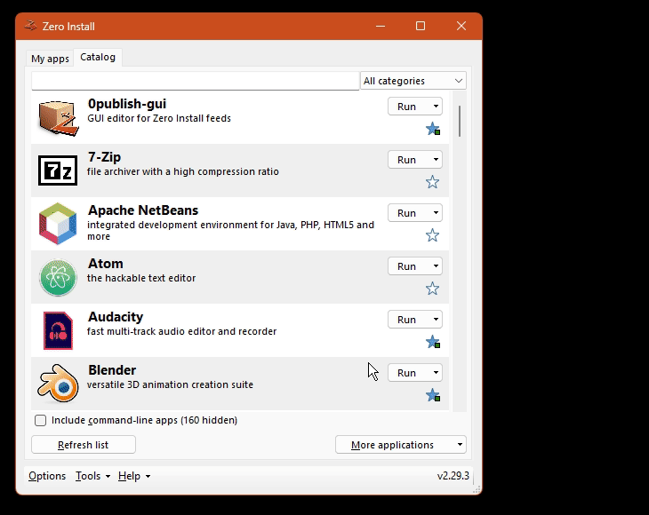

Run apps without installing them.
Decentralized. Open source. Works on Windows, Linux and macOS.
Get Zero Install Browse 300+ apps
Examples
0install run https://apps.0install.net/gui/vs-code.xml Download Visual Studio Code into a cache and run it.
0install add go https://apps.0install.net/golang/go.xml Add alias for running go to your PATH.
0install run --version=26.9.0 https://apps.0install.net/javascript/node.xml Run specific version of Node.js.

How does it work?
-
Fetch the feed
The URL points to a GPG-signed XML feed listing versions, downloads and dependencies.
-
Pick versions
A solver picks compatible versions of the app and its dependencies for your OS and CPU.
-
Download and verify
Archives are hash-checked against the signed feed and unpacked into a content-addressed cache.
-
Run
The app runs from the cache, with environment variables pointing to its dependencies.
How does it compare?
| Zero Install | APT / DNF | winget | Homebrew | |
|---|---|---|---|---|
| Non-admins can install software | Yes | No | Some | Yes |
| Supports multiple platforms | Yes | Linux | Windows | macOS and Linux |
| Multiple versions coexist | Yes | No | No | Some |
| Decentralized | Yes | No | Extra sources | Taps |
| Digital signatures | Yes | Yes | Hashes | Hashes |
| Can install systems software | No | Yes | Yes | No |
Distribute your software
Publish on any static web host, with no central registry to be admitted to.